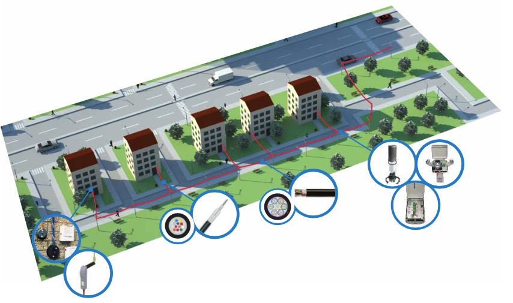
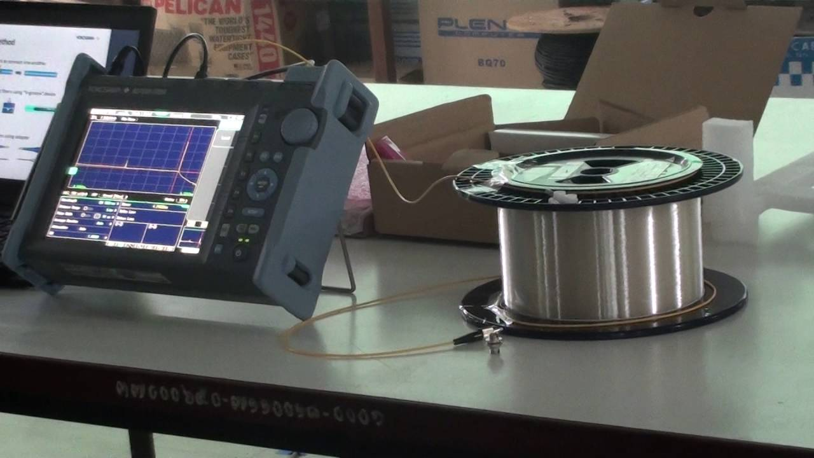

Proporcinamos las mejores soluciones para el incremento de la capacidad de su red. con equipos de alta capacidad, con opciones de protección en todos sus componentes y las mejores opciones para su monitoreo y administración
Redes de alta capacidad
Con la tecnología actual es posible llegar a tener capacidades hasta varios cientos de Gigabits en su red. El desarrollode una red de alta capacidad requiere de una ingeniería minuciosa y de la certificación de los diferentes componentes de la red óptica
Nosotros le apoyamos con la venta del equipo adecuado a sus necesidades y con la ingenería correspondiente, para la implementación y operación de su red. Trabajamos desde la planificación hasta el soporte de su red en producción. Estamos para apoyarle en cada fase de su proyecto y en cada área de su operación.

Proporcionamos el apoyo para la implementación de redes de acceso basadas en fibra óptica, ya sean enlaces punto a punto ethernet o tecnologías FTTx
Trabajos en redes de acceso
Proveemos los servicios para la implementación de infraestructura, para el desarrollo de redes de acceso, proporcinamos diseños, implementaciones, pruebas y soporte.

Suministramos los servicios necesarios para que verifique el buen funcionamiento de su red de fibra óptica,
Timpos de mediciones
Proveemos pruebas tanto a nivel físico como a nivel lógico de su red. Podemos hacer pruebas a nivel de OTDR, pruebas de continuidad, pruebas de rendimiento de la red.
Nuestra soluciones para data centers, incluyen los servicios, materiales y equipo ópticos para el perfecto desarrollo de su red
Componentes ópticos
A nivel de equipos activos contamos con soluciones de alta velocidad hasta 600Gb, que han sido diseñados espeficamente para interconexiones en data centers. Los equipos aprovechan al maximo el espacio dentro de los gabinetes proporcinando alta densidad y capacidad por cada unidad de rack.
Proveemos los elementos pasivos, como jumpers monomodo y multimodo en sus diferentes variantes, ODFs, acompladores, cajas de empalme, entre otros.
Los servicios en el área de fibra óptica que suministramos, permite que pueda desarrollar cualquier proyecto como llave en mano, si cuenta ya con los componentes activos y pasivos podemos trabajar unicamente en la implementación bajos los diseños y protocolos establecidos.